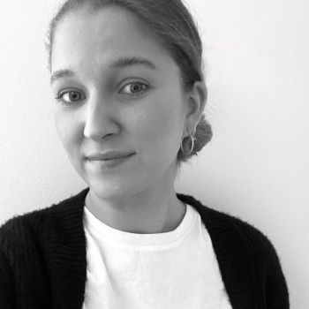

DISc persoonallisuustestin mukaan olen hallitsevasti vihreä persoona. Tämä tarkoittaa, että minulla on piirteitä, jotka tekevät minusta ystävällisen, avuliaan ja tiimipelaajan. Olen testin perusteella myös kärsivällinen ja lojaali, mikä tekee minusta hyvän kuuntelijan ja tiimin jäsenen, joka arvostaa toisten näkemyksiä ja sitoutuu positiivisesti tiimityöskentelyyn. Esimerkiksi työelämässä kykenen työskentelemään kärsivällisyyteni ja rauhallisuuteni ansiosta kovan paineen alla ja kykenen organisoimaan isojakin kokonaisuuksia. Näissä tilanteissa käytän aina poikkeuksetta hyviä organisointitaitojani, rauhallisuutta, paineensietokykyä, positiivisuutta ja proaktiivista työotetta. Olen myös aina työelämässä saanut palautetta siitä, että kanssani on miellyttävää ja helppoa työskennellä ja minulle on helppo puhua.
Töitä olen kerennyt tehdä useamman vuoden ravintola-alalla ja lopetin ravintola-alan työt korona-aikaan. Kiinnostuin toimistotyöstä ja lähdin opiskelemaan kiinteistöassistentiksi, sillä isännöintiala on kiehtonut aina. Kehityin nopeasti työssäni eri järjestelmien parissa ja päätin hakea ammattikorkeakouluun opiskelemaan liiketaloutta. Opiskelin vuoden verran, kunnes kiinnostuin IT-alasta ja päätin vaihtaa tietojenkäsittelyn puolelle. Työhistoriani varmasti puhuu puolestaan siinä, että nautin haasteista ja tykkään kehittää itseäni jatkuvasti.
Tavoittelen urallani työtä, jossa saan ratkoa ongelmia itseäni haastaen, ja olla osana toimivaa, ammattitaitoista ja rentoa työyhteisöä. Toisten työn arvostaminen ja kunnioitus on minulle avainasemassa työyhteisössä. Olen parhaillani, kun saan keskittyä ja tehdä pikkutarkkaa työtä sekä organisoida asioita. Olen erityisen kiinnostunut ohjelmistokehityksestä ja parhaillaan opiskelen ohjelmistokehityksen saloja. Tulen julkaisemaan sivuilleni opintojen edetessä portfolion erinäisistä koulu- ja vapaa-ajan projekteista.
